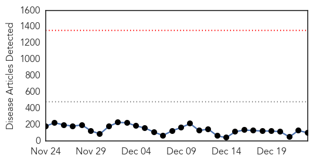
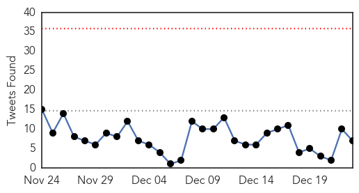
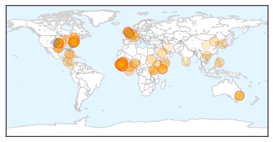
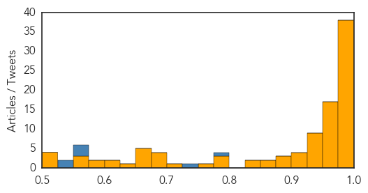
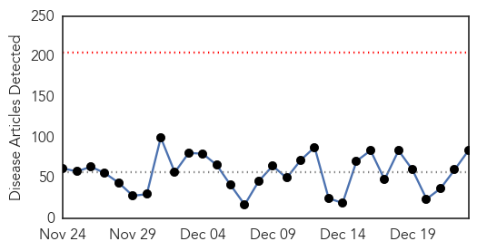
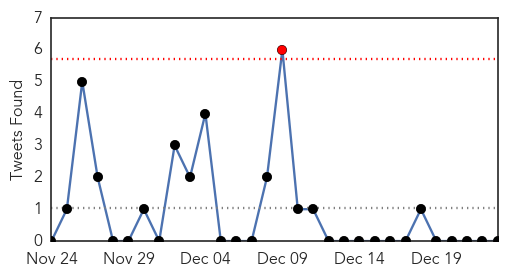
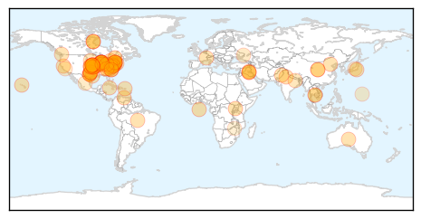

Ebola
30-Day Web Trend
0 alerts, 0 warnings

30-Day Twitter Trend
0 alerts, 0 warnings

Article Locations
Article Confidences
Top Articles:
- 1.000
- CDC chief sees Ebola progress in West Africa but remains cautious
- 1.000
- Lagosians On Red Alert Over Ebola
- 1.000
- Liberia’s Ebola Death Tolls Hits 3,376: WHO
- 1.000
- A year after the first case and many lessons later, the virus plods on
- 1.000
- African Ebola vaccine trial shows modest immune response
- 1.000
- Supporting Health Workers and Saving Lives on Ebola Front Lines - Sierra Leone
- 1.000
- Ebola Is Top Health Story for 2014
- 1.000
- Officials Keep an Eye on 1,700 for Ebola
- 0.999
- Ebola outbreak 'far from over'
- 0.999
- Ebola in decline, CDC chief reports
- 0.999
- Scientists Reach Crucial Milestone In Ebola Vaccine
- 0.999
- Robust Responses From the Asia-Pacific Region to the Ebola Outbreak in West Africa
- 0.998
- Marin getting its third Ebola fighter
- 0.998
- DNA Vaccines Hold Promise
- 0.997
- Over 70 NHS heroes fighting Ebola this Christmas
- 0.997
- Courage of Ebola health workers should inspire greater efforts by all, says Ban
- 0.996
- First Ebola Treatment Unit for Local Health Workers Arrives... -- SANTA BARBARA, California, Dec. 23, 2014 /PR Newswire UK/ --
- 0.996
- Ebola fight will be long;
- 0.995
- Person Who Traveled To W. Africa Tests Negative For Ebola « CBS New York
- 0.995
- Can the blood of Ebola survivors create a cure?
- 0.993
- The threat to West African health care
- 0.992
- Sierra Leone government bans Christmas celebration
- 0.992
- UN chief urges better early warning of next disease outbreak
- 0.990
- Ethiopia calls African nations to be more engaged in Ebola fight
- 0.988
- CDC Monitoring 1,400 Active Cases
- 0.988
- Christmas just another day for those fighting Ebola in West Africa, says UN staffer (UN
- 0.988
- CDC chief: 'World of difference' in Ebola fight, but complacency a risk
- 0.984
- Public Health Lessons from Ebola in 2014
- 0.984
- OFWs found returning from Liberia quarantined
- 0.983
- Patient in isolation after flight from Sierra Leone
- 0.983
- US Officials Warn Against Complacency in Fight Against Ebola
- 0.982
- CDC's Mission: Protecting the Health of Americans
- 0.982
- WASHing ebola away - Liberia
- 0.981
- The Disparities Between International Volunteers & Local Ebola Doctors Will Shock You
- 0.980
- Police shoot at Maryland bank robbery suspect
- 0.979
- Early-generation trial of Ebola, Marburg vaccine candidates positive
- 0.976
- Ill Doctor Recently Returned from West Africa Tests Negative for Ebola: Health Officials
- 0.976
- Can the blood of Ebola survivors create a cure?
- 0.975
- Ebola pioneer recounts that sinking feeling as Sierra Leone calls off Christmas
- 0.975
- Doctor from Bath volunteers to fight Ebola in Sierra Leone over Christmas
- 0.974
- Chris Christie To Nurse Who May Sue Him
- 0.974
- Scientists Report on Trial of Early-Generation Ebola, Marburg Vaccine Candidates
- 0.974
- Online News and Information Portal for Ghanaians In Diaspora
- 0.973
- Criticism over Ebola response 'far from reality' — WHO official
- 0.972
- Italian NGO Used Toxic Untested Ebola Drug on Patients in Sierra Leone
- 0.970
- Maidstone and Tunbridge Wells hospital doctor Andy Taylor gives up Christmas to fly to Sierra Leone to help Ebola victims
- 0.969
- 14 people actively monitored for Ebola in Mich.
- 0.969
- Ebola Survivor Explains her Ordeals
- 0.966
- Passenger returns negative results for Ebola at Sydney Airport
- 0.963
- Ethiopian soldiers could replace Sierra Leone troops in Somalia - president
Showing top 50 articles...
Top Tweets:
- 0.776
- 3 keys to stop Ebola: break cycle of growth; trace to source & stop transmission chains; strengthen Ebola-free areas to prevent cases
- 0.752
- Nous sommes en guerre contre Ebola - Naomi, @UNMEER Protocol http://t.co/Y1iKggkceI
- 0.746
- RT: Christmas is cancelled: A report from Ebola-struck Sierra Leone http://t.co/cmBoJE8XLV Ebola FightEbola http://t.co/X…
- 0.745
- Recent funds from Congress crucial to stop Ebola; improve U.S. ability to quickly respond to health threats like Ebola in the future.
- 0.740
- RT: IMF responds to Lancet article saying they enabled the Ebola outbreak in West Africa: http://t.co/YckuRdyN6a HT
- 0.715
- Liberia Postpones Elections Again Because of Ebola http://t.co/ffoqfncLyz
- 0.695
- 's facebook page includes some short profiles of health workers tackling Ebola https://t.co/eWDCxJHfox
- 0.654
- RT: Book art, christmas ebola can Christmas worsen Ebola's spread? @ElbowOutEbola http://t.co/765JyARl…
- 0.625
- “@thebest_carter: @ElbowOutEbola Carter Thebest feat Keutch K-brel (Stop Ebola) https://t.co/0HzyiUbkh7” | ElbowOutEbola StopEbola
- 0.621
- RT: Ebola epidemic continues to spread, requiring intensified effort http://t.co/dbuZdag86u
- 0.595
- RT: Donate and support WHO Ebola response. You can help stop Ebola http://t.co/WjrtoffUyw NoMoreEbola! http://t.co/WE92XuJuWG
- 0.589
- Fewer Ebola Cases Go Unreported Than Thought, Study Finds http://t.co/YUUemQBNXP
- 0.568
- RT: Stopping Ebola outbreak at its source in West Africa is essential in order to protect Americans. That is why CDC is on t…
- 0.568
- RT: Stopping Ebola outbreak at its source in West Africa is essential in order to protect Americans. That is why CDC is on t…
- 0.560
- .@GlobalFund taps new Emergency Fund for malaria control in Ebola affected Liberia http://t.co/fvRfxbZHUm RT
- 0.556
- RT: Vital we test drug candidates in ebola epidemic. But they have to be assessed properly first. Testing just anything is unethic…
- 0.541
- Stopping Ebola outbreak at its source in West Africa is essential in order to protect Americans. That is why CDC is on the ground.
- 0.502
- Putting family first. A heroic story from inside the Ebola fight http://t.co/OEuJpjqlwq TackleEbola
Unknown
30-Day Web Trend
0 alerts, 0 warnings

30-Day Twitter Trend
0 alerts, 0 warnings

Article Locations
Article Confidences

Top Articles:
- 0.995
- WALB.com, South Georgia News, Weather, Sports
- 0.994
- KDHE and CDC investigate new virus
- 0.991
- Flu forces some North Carolina hospitals to limit visits
- 0.989
- As flu spreads, treatment in short supply
- 0.989
- New 'Bourbon Virus' From Ticks Discovered
- 0.989
- Kansas says new virus found after resident's death
- 0.989
- New Tick-Borne 'Bourbon Virus' Discovered in Kansas After Infected Man Dies; CDC, Doctors Don't Know How to Stop It
- 0.988
- Flu season likely will be severe, Pennsylvania experts say
- 0.982
- Flu cases spike in Richmond area
- 0.967
- CDC says flu shot less effective, but still recommended
- 0.967
- Officials Discover New Type of Virus After Investigating the Death of a Kansas Resident
- 0.967
- Swine virus found on four Waianae pig farms
- 0.963
- Chandigarh officials suspected with bird flu test negative
- 0.955
- Health Department sees flu hospitalizations surge, urges vaccination
- 0.940
- Number of flu cases growing
- 0.924
- CDC Discovers New Tick-Borne “Bourbon” Virus
- 0.919
- Illinois Reports "Widespread" Flu
- 0.917
- Chicago Tribune
- 0.917
- Chicago Tribune
- 0.917
- Chicago Tribune
- 0.917
- Chicago Tribune
- 0.917
- Chicago Tribune
- 0.917
- Chicago Tribune
- 0.917
- Chicago Tribune
- 0.917
- Chicago Tribune
- 0.917
- Chicago Tribune
- 0.917
- Chicago Tribune
- 0.917
- Chicago Tribune
- 0.917
- Chicago Tribune
- 0.917
- Chicago Tribune
- 0.917
- Chicago Tribune
- 0.917
- Chicago Tribune
- 0.917
- Chicago Tribune
- 0.917
- Chicago Tribune
- 0.917
- Chicago Tribune
- 0.917
- Chicago Tribune
- 0.917
- Chicago Tribune
- 0.917
- Chicago Tribune
- 0.917
- Chicago Tribune
- 0.917
- Chicago Tribune
- 0.917
- Chicago Tribune
- 0.917
- Chicago Tribune
- 0.917
- Chicago Tribune
- 0.917
- Chicago Tribune
- 0.917
- Chicago Tribune
- 0.917
- Chicago Tribune
- 0.917
- Chicago Tribune
- 0.917
- Chicago Tribune
- 0.917
- Chicago Tribune
- 0.917
- Chicago Tribune
Showing top 50 articles...
Top Tweets:
- 0.767
- making the flu vaccine http://t.co/Iv7YsxRQ6p flu infectious disease prevention http://t.co/9e9ooHFNXZ